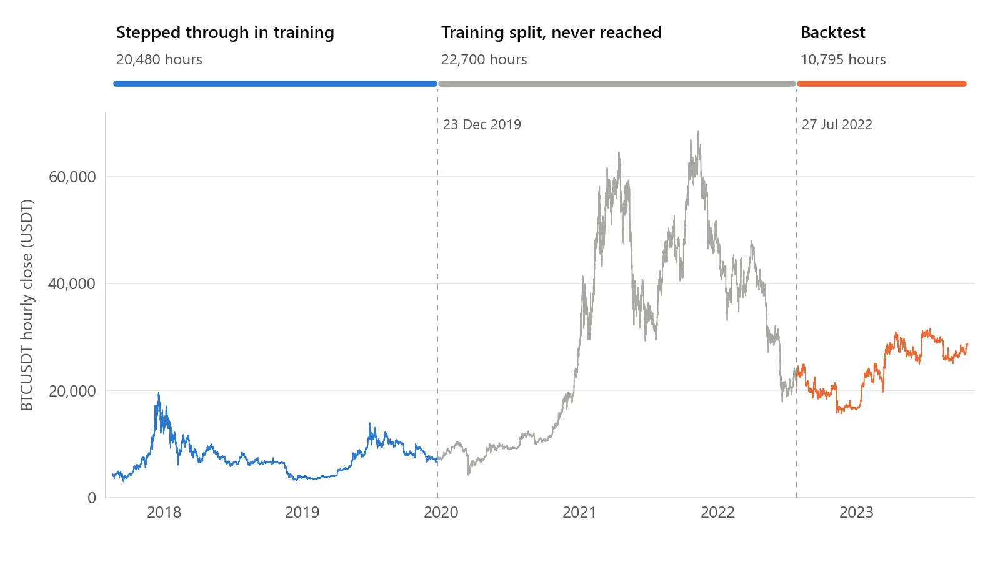

Software · Simulation
Backtested PPO trading agent with an HLS inference draft
A reinforcement-learning agent, trained with PPO, trades hourly BTCUSDT in a backtest.

Its policy network also exists as a fixed-point C++ draft for high-level synthesis (HLS) that has no trained weights and was never synthesized or run on an FPGA. In one run on about 15 months of held-out data it returned 36.37% with a Sharpe ratio of 0.78, against 35.93% and 0.77 for buying and holding. The only latency measured is software: 315.89 µs per decision on a CPU.
The problem
The goal was a reinforcement-learning trading policy whose inference could move from Python to an FPGA, for cases where decision latency matters. That needs two results: a return on data the policy has not seen, and a decision time in hardware that beats software.
The dataset is hourly price bars (candles), far slower than any latency-bound strategy, so the hardware side is an exercise.
What I built
The environment is a Gymnasium class over a Kaggle file of hourly prices: 53,988 BTCUSDT rows from Aug 2017 to Oct 2023. At each step the agent sees a 12-hour moving average, a 14-hour relative strength index (RSI), the hour's volume and the last price change.
The agent can hold, buy with all its cash or sell everything. It starts with $10,000 and is rewarded with the hourly change in net worth. Fees and slippage are not modeled.
The training split is the first 80% of rows in time order. I trained the agent with PPO (proximal policy optimization) from Stable-Baselines3 on the split's first 20,480 rows; the log shows 73 seconds on a CPU. The policy is the default 4-64-64-3 tanh network, with 4,675 weights and biases on the action path.
The file accelerator.cpp restates that forward pass for Vitis HLS in 16-bit fixed point with 8 integer bits. It has three pipelined layer loops and an argmax over the three outputs. Inputs, the action and all weights sit on AXI4 master ports.
Results
Every figure comes from one training run with no fixed seed. On the held-out 20%, 10,795 hourly rows from 27 Jul 2022 to 19 Oct 2023, $10,000 became $13,637.11. That is a 36.37% return and an annualized Sharpe ratio (mean return divided by its volatility) of 0.78, with the risk-free rate at 0.
As a baseline, buying at the first test hour and holding returned 35.93% with a Sharpe ratio of 0.77 under the same rules. The agent ended 0.44 points ahead in a rising market, too small a gap to credit to the policy.
Latency was measured only in software, never in hardware: 500 Stable-Baselines3 predict calls averaged 315.89 µs on a CPU.
Limits and next steps
No FPGA ran, and the HLS file has not been through synthesis. It still needs the trained weights exported in fixed point and a testbench.
The 16-bit fixed-point type cannot hold the raw inputs, so the features need scaling first. Training covered 20,480 of the 43,180 training rows in one unseeded run, and the backtest models no fees or slippage.
Still missing: longer training with fixed seeds, fees in the backtest and a synthesis report for the HLS core.